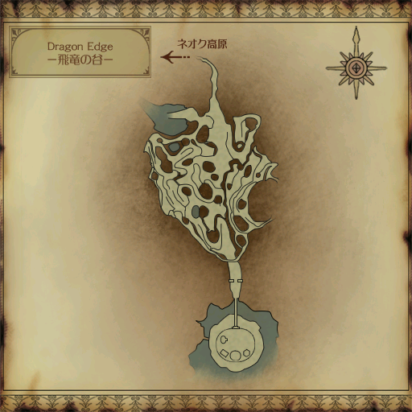

一覧釣りガイド：飛竜の谷
飛竜の谷 の釣り場 14 か所（魚の出る位置 31）。
釣り場の地図

#1#2青い点が魚の出る位置、#番号が釣り場（3 匹以上）。点にマウスを合わせると魚の名前。
釣り場
地図の青い点が魚、赤がプレイヤーを襲うモンスターの出る位置。失敗マスはヒットゾーン 0・HP 満タンの魚のときのゲージに占める割合。
#1（魚 12 匹）
- 魚の数
- 12
- 広さ
- 89 m
- 再出現
- 60 秒〜2 分
- 魚の Lv
- 50〜58
釣れる魚
| 魚（出るたびに抽選） | 数 | おもなドロップ（1 匹あたり） | 失敗マス（スキル 30 / 60 / 90） |
|---|---|---|---|
| ウナギ Lv 50〜52（30%）／ウナギ Lv 51〜53（50%）／ウナギ Lv 54〜56（15%）／ウナギ Lv 55〜58（5%） | 12 | 鰻 < 45cm > 0.5、鰻 < 38cm > 0.3、鰻 < 55cm > 0.1、鰻 < 58cm > 0.1 | 51% / 21% / 0% |
近くの敵
プレイヤーを襲うモンスターは届かない。
#2（魚 6 匹）
- 魚の数
- 6
- 広さ
- 48 m
- 再出現
- 60 秒〜2 分
- 魚の Lv
- 50〜58
釣れる魚
| 魚（出るたびに抽選） | 数 | おもなドロップ（1 匹あたり） | 失敗マス（スキル 30 / 60 / 90） |
|---|---|---|---|
| ウナギ Lv 50〜52（30%）／ウナギ Lv 51〜53（50%）／ウナギ Lv 54〜56（15%）／ウナギ Lv 55〜58（5%） | 6 | 鰻 < 45cm > 0.5、鰻 < 38cm > 0.3、鰻 < 55cm > 0.1、鰻 < 58cm > 0.1 | 51% / 21% / 0% |
近くの敵
| モンスター | Lv | 行動 | 数 | 魚までの距離 |
|---|---|---|---|---|
| リバーサイド クロコダイル | 75〜78 | アクティブ | 1 | 20 m |
小さな釣り場（魚 1〜2 匹）
| 釣り場 | 魚 | 釣れる魚 | 再出現 | 近くの敵 |
|---|---|---|---|---|
| #3 | 2 | ウナギ Lv 50〜52（30%）／ウナギ Lv 51〜53（50%）／ウナギ Lv 54〜56（15%）／ウナギ Lv 55〜58（5%） | 60 秒〜2 分 | なし |
| #4 | 1 | ジャイアント イプス バス Lv 35〜38（20%）／ジャイアント イプス バス Lv 38〜40（30%）／ジャイアント イプス バス Lv 40〜45（30%）／ジャイアント イプス バス Lv 45〜50（20%） | 60 秒 | なし |
| #5 | 1 | ジャイアント イプス バス Lv 35〜38（20%）／ジャイアント イプス バス Lv 38〜40（30%）／ジャイアント イプス バス Lv 40〜45（30%）／ジャイアント イプス バス Lv 45〜50（20%） | 60 秒 | なし |
| #6 | 1 | ジャイアント イプス バス Lv 35〜38（20%）／ジャイアント イプス バス Lv 38〜40（30%）／ジャイアント イプス バス Lv 40〜45（30%）／ジャイアント イプス バス Lv 45〜50（20%） | 60 秒 | なし |
| #7 | 1 | ジャイアント イプス バス Lv 35〜38（20%）／ジャイアント イプス バス Lv 38〜40（30%）／ジャイアント イプス バス Lv 40〜45（30%）／ジャイアント イプス バス Lv 45〜50（20%） | 60 秒 | なし |
| #8 | 1 | ジャイアント イプス バス Lv 35〜38（20%）／ジャイアント イプス バス Lv 38〜40（30%）／ジャイアント イプス バス Lv 40〜45（30%）／ジャイアント イプス バス Lv 45〜50（20%） | 60 秒 | なし |
| #9 | 1 | ジャイアント イプス バス Lv 35〜38（20%）／ジャイアント イプス バス Lv 38〜40（30%）／ジャイアント イプス バス Lv 40〜45（30%）／ジャイアント イプス バス Lv 45〜50（20%） | 60 秒 | なし |
| #10 | 1 | ジャイアント イプス バス Lv 35〜38（20%）／ジャイアント イプス バス Lv 38〜40（30%）／ジャイアント イプス バス Lv 40〜45（30%）／ジャイアント イプス バス Lv 45〜50（20%） | 60 秒 | なし |
| #11 | 1 | ジャイアント イプス バス Lv 35〜38（20%）／ジャイアント イプス バス Lv 38〜40（30%）／ジャイアント イプス バス Lv 40〜45（30%）／ジャイアント イプス バス Lv 45〜50（20%） | 60 秒 | なし |
| #12 | 1 | ジャイアント イプス バス Lv 35〜38（20%）／ジャイアント イプス バス Lv 38〜40（30%）／ジャイアント イプス バス Lv 40〜45（30%）／ジャイアント イプス バス Lv 45〜50（20%） | 60 秒 | なし |
| #13 | 1 | ジャイアント イプス バス Lv 35〜38（20%）／ジャイアント イプス バス Lv 38〜40（30%）／ジャイアント イプス バス Lv 40〜45（30%）／ジャイアント イプス バス Lv 45〜50（20%） | 60 秒 | なし |
| #14 | 1 | ジャイアント イプス バス Lv 35〜38（20%）／ジャイアント イプス バス Lv 38〜40（30%）／ジャイアント イプス バス Lv 40〜45（30%）／ジャイアント イプス バス Lv 45〜50（20%） | 60 秒 | なし |